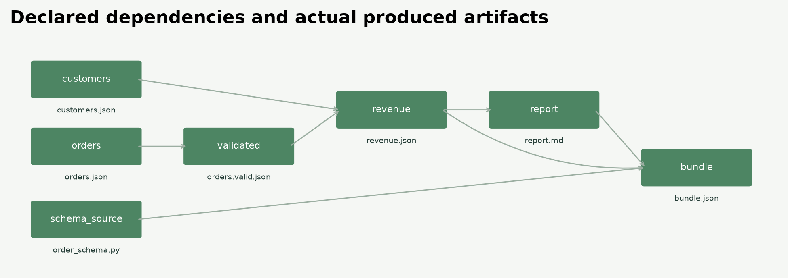
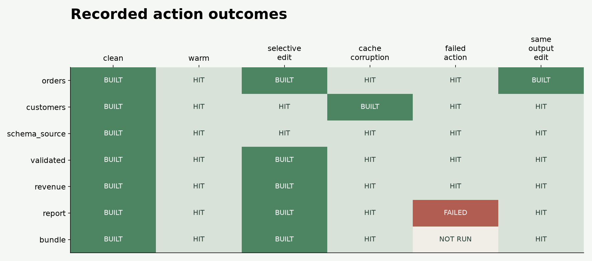
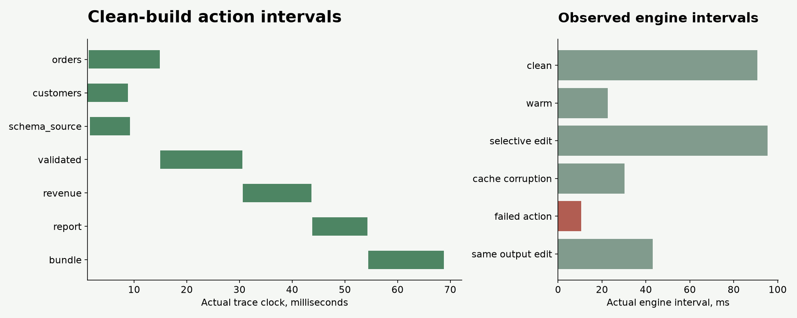

01 / DECLARED DEPENDENCIES
CSV and schema sources to a verified artifact bundle

Owned transformations
Normalize CSV rows, validate a local schema subset, join customer regions, aggregate integer cents, generate a schema constant, render Markdown and bundle artifacts. No arbitrary shell commands or plugins execute.
Ready-action concurrency
Three workers can execute independent actions. A dependent starts only after every dependency has a complete verified cache object. Barrier-based tests establish concurrent readiness without sleep assumptions.
02 / CONTENT-BASED REUSE
Observed rebuild boundaries

The value edit changes the five-action dependency closure. A whitespace-only source edit changes the orders key but not its normalized output; downstream keys remain reusable. A failed action prevents the bundle and final release selection.
03 / CORRUPTED CACHE OBJECT
Verify output bytes before accepting a hit
Actioncustomers / customers.json
Original SHA-256bbc62aa0ceeaddb76e8822e379d447ae702870ee8ac72b8571a0c2cbbe6c2e5d
Corrupted SHA-2567bb8abf60a5c040f2adca73bd91cd98aa67cb22ffd8521f6f5fd8fe62f0b8464
Rebuilt SHA-256bbc62aa0ceeaddb76e8822e379d447ae702870ee8ac72b8571a0c2cbbe6c2e5d
Recorded rejection
The experiment appends controlled bytes to a cached output. Verification rejects it, moves the object to quarantine and rebuilds customers. The preserved rejected object contains the actual corrupt file and its old manifest.
Trust boundary
Hashes detect accidental corruption; they do not authenticate a cache whose files and manifests an attacker can rewrite. The cache is local and trusted. A lock excludes concurrent builds sharing that cache.
04 / FAILURE AND VISIBILITY
A staged file does not become a selected release
Injected failureInjected failure after staged file write
Staged file observedreport.md
Pointer before945b008c606172534b0b1fc4934d9b64c4e7408312f29305062e5a628fd8ea3b
Pointer after945b008c606172534b0b1fc4934d9b64c4e7408312f29305062e5a628fd8ea3b
action outputs → private staging → verified cache object rename
all actions complete → new release directory → atomic current.json replacement
The pointer hashes are identical after failure. Valid sibling cache objects may remain reusable. Atomic visibility is not crash durability: pointer data is fsynced, but directories and every artifact are not. Independent tests also inject a failure at current.json replacement.
05 / ACTUAL LOCAL INTERVALS AND VERIFICATION
Action timing and reproduction evidence

Timing scope
Actual perf_counter_ns intervals, including cache checks and final release copying. Source snapshot and tool-identity preparation precede the trace clock. One sequential local observation per scenario is not a speedup benchmark.
Source bytes are frozen per build after per-file reads; external edits are not captured as an atomic multi-file snapshot.
Reproduce
python -m unittest discover -s tests -v
python scripts/run_study.py --output-dir build/my-run
python scripts/verify_results.py --output-dir build/my-run
Saved evidence includes source snapshots, complete selected releases, action traces, cache corruption and independent recomputation of revenue totals.
Python 3.13.17 · Windows-11-10.0.26200-SP0 · 1200 synthetic orders · recorded 2026-11-21T00:42:39.561860+00:00